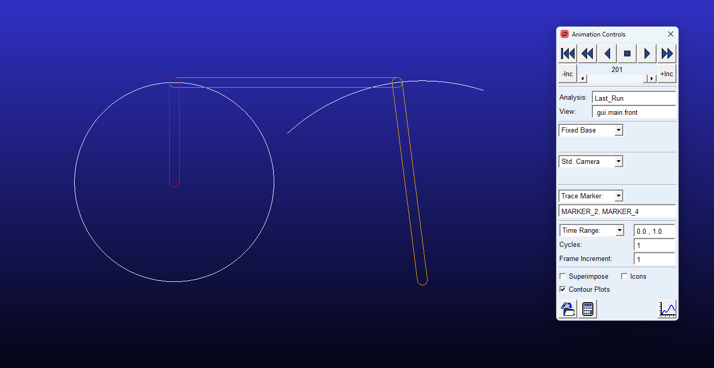
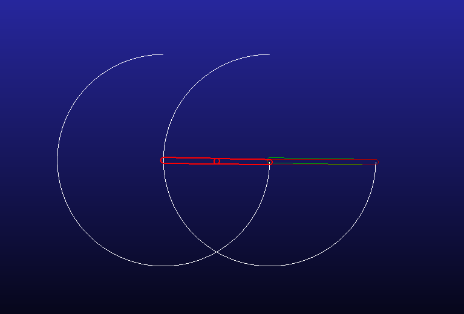
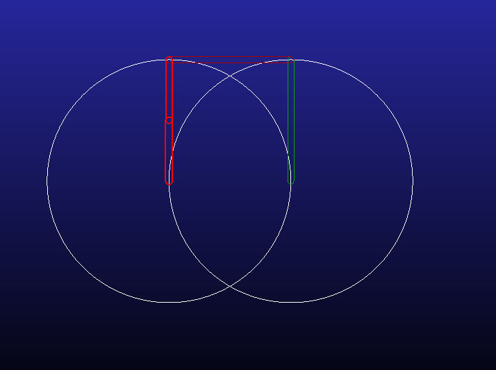
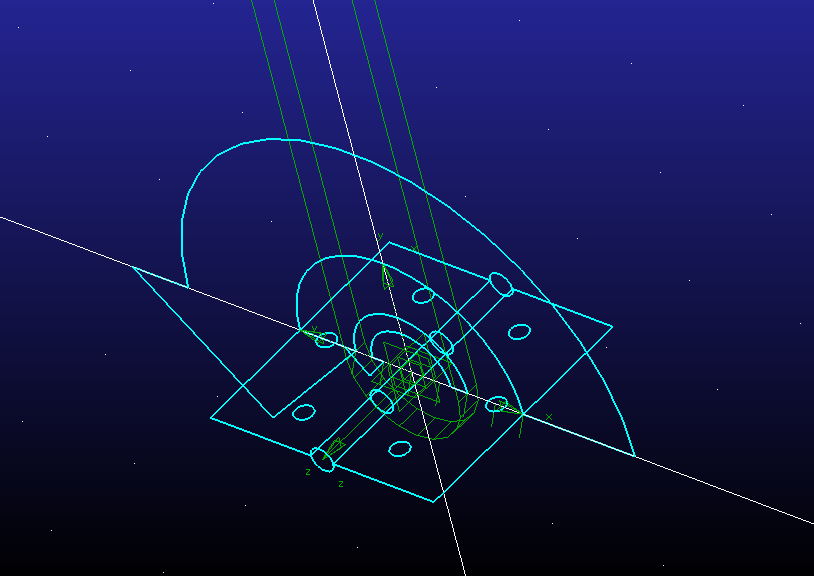
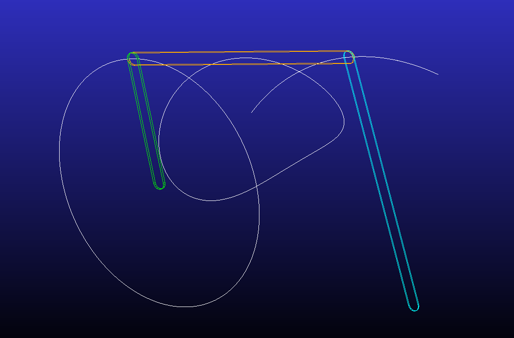

CourseworkSIMULATION
Four-bar linkage in MSC Adams
Why does a simple mechanism make a multibody solver fail? Four experiments on a four-bar linkage, each one explained with the degree-of-freedom count and the constraint Jacobian.
- Context
- Multibody dynamics lab
- Year
- 2026
- Work
- In a pair
- Tool
- MSC Adams
ARedundant but consistent constraints
With four revolute joints and a motion on the driver, the Grübler count
DOF = 6·n_moving − 5·n_revolute − n_motion gives −3: three constraints are redundant.
They are identical equations, so Adams removes them and the model runs with 0 DOF.

BMotion into a non-solvable state
Putting the motion on the follower instead fails: the follower is twice as long as the driver and cannot turn fully, so driver and coupler end up aligned and the imposed rotation can no longer satisfy the other constraints.
CSingular configuration
With a parallelogram linkage, the simulation fails at the driver's 270° position, where all links are aligned:
- The follower angle is no longer imposed by the driver (it can stay a parallelogram or flip to a crossed shape), so the mechanism locally gains one DOF although the Grübler count is 0.
- The constraint Jacobian
∂Φ/∂qloses rank, Newton–Raphson cannot converge, and Adams stops. - With 361 steps instead of 360, no time step lands exactly on the singular instant, so the simulation "passes". The singularity is still there, and a real linkage would have to cross it, where it could flip, jam or see very large joint forces.


DRedundant and inconsistent constraints
- Tilting the driver joint by 15° makes the redundant equations contradict each other (a planar linkage needs parallel axes), so the model fails at the first step.
- Fix: replace two revolutes with a spherical and a universal joint (set with Body 3-1-3 Euler angles). New count:
18 − 2×5 − 3 − 4 − 1 = 0, and the simulation runs to the end.

